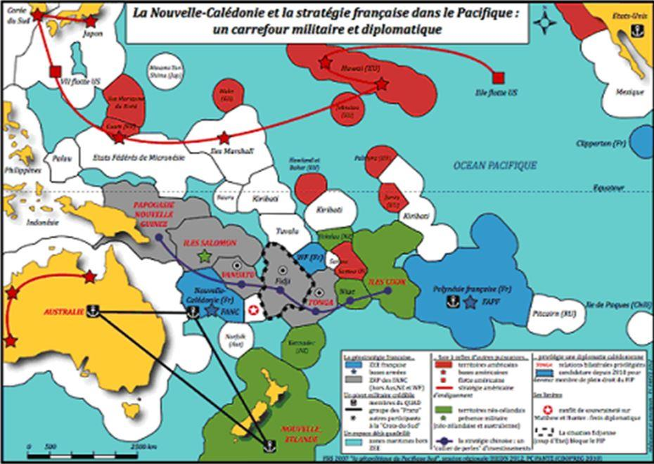
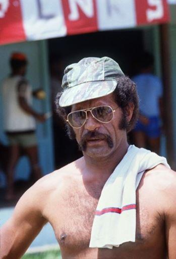
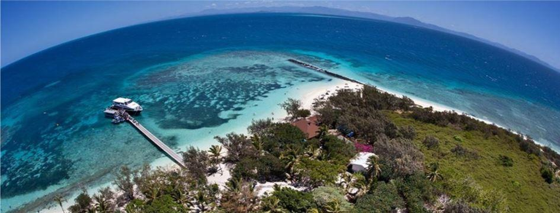

La question de l’indépendance se pose pour la Nouvelle-Calédonie. Les néo-calédoniens sont-ils prêts à se défaire du joug de la France ?
Située à 16000 kms de notre pays, la Nouvelle-Calédonie semble être encore un « fardeau » redouté par la Présidence Macron. En effet, l’île est convoitée pour ses richesses maritimes, ses trésors naturels et ses minerais précieux (nickel, cobalt, fer…), mais aussi pour son plus grand lagon du monde.
Mais quels seraient les avantages de l’indépendance pour les kanaks, le peuple originaire, de cette île du Pacifique ?
L’archipel flirte avec des collusions d’intérêts et des oligarchies locales qui nous rappellent que ce territoire d’outremer était un fleuron du colonialisme.
Les plaies s’ouvrent de nouveau pour les partisans de l’indépendance.
Le massacre d’Ouvéa restera gravé dans la mémoire de l’île. Quatre gendarmes et dix-neuf indépendantistes kanaks sont morts. Ces événements n’étaient que la conséquence de notre main mise (depuis 1853) sur cet archipel dans le but avoué de mettre en minorité le nombre des kanaks en faisant immigrer en masse les métropolitains riches. Et ce, sans oublier que 110 kanaks ont été emmenés de force en 1931 pour être montrés à l’exposition coloniale !
Les écarts se creusent et les inégalités aussi. L’appauvrissement du peuple originaire que sont les kanaks n’est pas sans heurter les indépendantistes qui, les années antérieures avaient multiplié les attaques contre les « caldoches », ces nouveaux colons venus de la métropole.
Déjà en 1984, deux frères de Jean-Marie Tjibaou, indépendantistes, sont tués en représailles à ces attaques à Hienghène, puis le leader indépendantiste surnommé « le vieux Eloi » Machoro, est abattu en 1985.
C’est une plaie qui s’ouvre sur ce référendum tant attendu. Une plaie qu’il faudra temporairement oublier pour pouvoir avancer. Mais avancer vers quoi ? L’indépendance ou la France ?
La France ayant encore aujourd’hui dans le nord de l’île que peu d’influence en matière d’organisation sociale, de justice ou encore de droit de propriété du sol, les kanak considérant la terre comme étant intouchable. C’est en effet la terre de leurs ancêtres et dans l’avenir, celle de leurs enfants.
La Nouvelle-Calédonie est coupée globalement en deux, le nord, kanak et le sud, immigrés « ex colons » installés et leurs enfants nés sur le sol.
L’indépendance n’est qu’une affaire de protection culturelle du peuple originaire. C’est cette voie que ce peuple souhaite protéger de la main mise française sur leur façon de vivre et de penser. Comment leur en vouloir ?
La culture kanak est contraire à l’individualisme, prône l’appartenance au peuple océanien et souligne les rapports de cette culture avec le christianisme. On dirait à s’y méprendre que le calédonien originel veut garder une identité propre, la sienne.
La colonisation a amené son lot de migrants dont les français « blancs » et aussi les wallisiens, tahitiens, japonais qui ne sont là que pour assurer les besoins quotidiens de leurs familles.
L’avenir de la Nouvelle-Calédonie se jouera le 4 novembre prochain. Date hautement symbolique pour le Congrès calédonien car il fait référence aux accords de Matignon et d’Oudinot en 1988. Les accords de Matignon furent conclus par une délégation indépendantiste (Jean-Marie Tjibaou) et une délégation anti-indépendantiste (Jacques Lafleur, sous l’égide du gouvernement Michel Rocard). Ces accords furent approuvés par l’ensemble des français le 6 novembre 1988 à 80 % des suffrages exprimés et une participation de 37 % !
Depuis cette date la question sensible de l’autodétermination néo-calédonienne reste posée.
Détachement de la France ou non, il faudra gérer les conséquences car le peuple kanak n’est pas majoritaire avec moins de 40 % de la population contre 30 % d’européens.
Des discussions sur le poids des mots et leur signification ont permis aux indépendantistes et aux anti-indépendantistes de s’exprimer face aux propositions du premier ministre Edouard Philippe, après 16 heures de pourparlers.
Finalement, la question sera posée en ces termes « Voulez-vous que la Nouvelle-Calédonie accède à la pleine souveraineté et devienne indépendante ?1 »
Est-ce cependant une question sans ambiguïté et compréhensible par tous ?
Louis Mapou, indépendantiste de l’UNI (Union Nationale des Indépendantistes) disait qu’il ne veut pas « une rupture avec la France à l’algérienne » mais une « indépendance » avec un « partenariat » ou « association ». L’indépendance pourrait faire peur aux électeurs ! A l’opposé Sonia Backès, leader des républicains calédoniens réclamaient des bulletins de vote avec le mot « France » en toutes lettres. Ce ne sera pas dans le texte de la question mais dans la campagne qu’elle entend menée sur le thème "La France est une chance". Le parti a déjà commencé à informer les habitants de la grande terre et des îles.
Alors, ce sera la France ou l’indépendance, le passé ou l’avenir, la mémoire ou l’oubli ? la soumission ou la culture identitaire ?
Cette question se pose aux calédoniens comme elle se pose à nous Européens ! Nous sommes comme les kanaks, exposés à la volonté de tous ceux qui contribuent à l’invasion de l’Europe avec une politique immigrationniste tendant à nous mettre en minorité.
Ces nouveaux immigrés sont déjà nos colons !
Et comme disait Jean-Marie Tjibaou le 1er décembre 1984, brandissant son drapeau indépendantiste « Que Kanaky vive ! »
Partager cette page